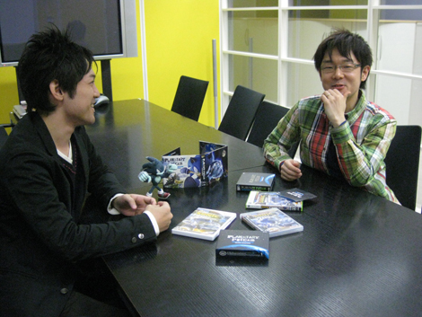
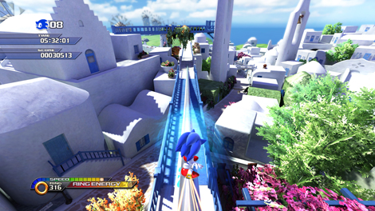
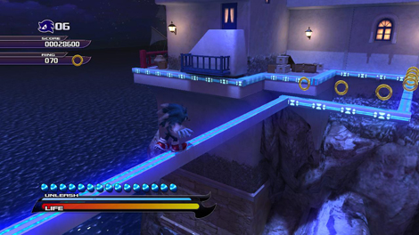

第１１回 橋本×大谷 サウンド対談 その４「昼と夜」
2009年03月26日
橋本 ： アクションステージの曲をもっとクローズアップしたいところですね。
大谷 ： そうですね。
では、メインとなる昼と夜２つのアクションステージの音楽について話しましょうか。
これも他同様に、基本コンセプトを決めるとこからスタートしましたね。
橋本 ： 「昼のステージに関しては地域色はしっかり出して、それでいてスピード感をしっかり出す」……大雑把にはそんなとこでしたね。
大谷 ： そのコンセプトを元に制作に入りましたが、これが、なかなか難しかったんですね。
橋本 ： ははは。
大谷 ： すべてのステージにおいて、地域色とゲーム性の両方をいいバランスで満たす曲……なかなか、試行錯誤しました。

橋本 ： 当初、結構議論も多かったですね。
大谷 ： 最も話し合ったポイントでしたね。
橋本 ： でしたね。
『SWA』の楽曲の方向がどうなるかの最も重要なポイントだったように思います。
大谷 ： なので、色々と考えました。
橋本 ： 相当悩んでもらいました（笑）
大谷 ： 曲のラフを作りつつ聴いてもらっては話し合い、を繰り返してたんですが、最初に考えたプランは、国ごとの地域色は村で表現し、ステージではゲーム性（スピード感やパワーアクション）を盛り上げることに特化した音楽と役割を分けて考えたんです。
橋本 ： そうでしたね。
ですが、私はアクションステージ中のＢＧＭにも地域性を出すということに固執しました。
困るだろうなあと思いながら（笑）
大谷 ： ははは、悩みましたね〜
橋本 ： ははは。一応心の中では「無茶言ってごめんなさい」とは思ってたんですけどね。
要求は強引でしたね（笑）。
なので、激論とかまでは行かないですが、結構緊迫感のある場面もありましたよね。
大谷 ： それだけ重要なポイントですからね。
ディレクターとのやり取りの中から刺激を受けて、思わぬアウトプットを出来たら面白いなと思っているんです。
クリエイターとしての器が試されるわけですね。
橋本 ： 実際最初に楽曲の方向性がまとまるまでは結構時間を費やしましたね。
デモ曲のテイク数も多かったですね。
大谷 ： 多かったですね。
僕が最初の頃に作ったステージ曲は全て数パターン存在しているんじゃないかな。
橋本 ： 私の方は「どう要望を伝えるとよりイメージに近づくか」、大谷さんの方は「どう作ると品質を保ちつつ要求に近づくか」というのを探っていた感じでしたよね。
大谷 ： そうですね。
橋本 ： お互い手探り状態でしたね。
大谷 ： その手探り状態を抜け出すきっかけになった曲が、「ホワイトアイランド」の昼ステージ『Windmill Isle – Day』でしょうか。

橋本 ： そうですね。あそこでブレイクスルーしましたね。
「地域性」、「スピード感」を両立するというお題をクリアーしてくれました。
大谷 ： このステージは当初、今とは全く違う方向の曲を作ってたんですよね。
橋本 ： ええ、かなり違ってましたよね。
大谷 ： もっと軽快なロックでバンド編成の曲でしたね。
橋本 ： バンドでしたね。
「非バンド系で行きましょう」的な話にもなりましたね。
大谷 ： そうでした。
しかしその最初のデモをアレンジして「地域性」、「スピード感」を両立するのは遠回りだと判断し、いっそ全く違う路線で作り直しちゃえーと思って出来たのが、体験版でも聴く事が出来る今のバージョンです。
我ながら大胆に方向転換しました。
橋本 ： ジャンル的にはドラムンベースとかそっち系にシフトしましたよね。
でも地域色みたいな。これが結構しっくり来るというか。
民族楽器がメインなんだけど、ダンス系の色があるという……。
大谷 ： いろいろな音楽の要素がミックスされた創作音楽ですね。
橋本 ： ダンス系は大谷さんの得意分野でしたよね？
大谷 ： 確かに得意なジャンルではありますが、自分の音楽性はものすごく雑多なんですよ。
あまり自分の得意な手段に固執して、可能性を狭めてはいけないといつも考えているんですが、色々な可能性を検討した結果、あるべきところに収まるというのは良いプロセスだと思います。
「ホワイトアイランド - 昼」『Windmill Isle – Day』はボサノバとドラムンベースが融合した音楽でしょうか。
橋本 ： そうですね。おしゃれな感じと、激しい感じが不思議と融合してますね。
「ホワイトアイランド」の方向転換後の曲を聴かせてもらって、「決まった！」という感じがありました。
あれは即ＯＫでしたね。
大谷 ： 新しい方向性に多少の手応えは感じつつもオシャレな感じがあっていいのかな？とかまだ迷いもあったんですよ。
でも、橋本さんのプッシュもあってこれで行ってみようと思いました。
橋本 ： たしかに、大胆な方向性ですものね。
大谷 ： それを期に、他のステージ曲もアレンジを加えて行きました。
「オレンジ ルーフス – 昼」『Rooftop Run – Day』は、最初から今と同じ曲ではあったんですが、純粋なドラム、ベース、ギターのみのバンド編成だったんです。
それに対し、もっと地域色を出して欲しいというリクエストがあったので、これまたあれこれ悩んだ末に、
ハイスピードなゲーム性と「スパゴニア」の風情のある街並をかけ合わせて、パンクロック × ストリングス という結論に達しました。
我ながら自由な発想ですね……。
これもいい方向に転びました。
橋本 ： あれも独特の雰囲気が出てますよね。
「オレンジルーフス」の曲は海外スタッフからの受けが良いです。ああいうのが好きみたいですね。
大谷 ： 人気ありますね。
橋本 ： ソニックらしさが良く出た曲ですね。
個人的には「ドラゴンロード – 昼」『Dragon Road – Day』の曲も好きですよ。
というか、甲乙付けがたいですが。
大谷 ： 「ドラゴンロード – 昼」もキャッチーなところがいいですよね。
橋本 ： キャッチーですね。
大谷 ： どんな曲調であれポップなセンスを大切にしたいと思っていたんですが、なんだかんだ、話し合いながら作り進めた結果、耳に残る良い曲が揃いましたね。
橋本 ： いろいろ注文がうるさかったので、うざがられてないかと内心ヒヤヒヤしてたのですが、そう言ってもらえてよかったです（笑）
私も非常によい経験でした。
大谷 ： もう１つ、昼のステージのサウンドで重要なポイントは、「ソニック ブースト」を発動した時の超高速演出ですね。
ブースト時の速度感を音でも表現したいと考えたんです。
橋本 ： わりと早い段階からアイデアとして出て来ていましたね。
大谷 ： 超高速状態になると音の速さも超えてしまうという発想から、流れていた音楽がゆがんで聴こえるようなサウンドエフェクトがリアルタイムでかかっています。
橋本 ： 音楽が完全に消えてしまうと寂しいですが、効果が薄くても迫力がないので、エフェクトの持続時間やかかり具合などについても試行錯誤しましたよね。
大谷 ： ブーストを発動した瞬間は爆発音にも似た派手な効果音が鳴り、突風の持続音も鳴り始めるので、音楽と効果音が同じタイミングに主張し合ってぶつからないように、今はどの音が主役なのか、リアルタイムにそのバランス変化させながら役割分担がされているんです。
ブーストボタンを押すと、それに連動して音楽が変化することで、ただバックに流れているだけの音楽ではない、ゲームならではのインタラクティブなサウンドを実現しています。
橋本 ： プレイに連動していることが良いですね。
大谷 ： 昼のステージの音楽キーワードはスピード感と地域性でしたが、夜のステージは全く別のコンセプトを立てていました。
橋本 ： 夜も地域性というのは重要なポイントだったのですが、
それ以外の軸となるものは昼に比べるとおまかせ色が多めだったように思います。
夜のＢＧＭの方向性はどこに収束すると良いのかというイメージについては難しいなという感触が私にはありました。
大谷 ： そうですね。夜であるということと、遊び自体も昼とは異なるので、対照的な音楽にしようということで、キーワードの１つに「ジャズ」を挙げてみました。
橋本 ： はい、試みとしては面白いと思いましたので、じゃあそれで行ってみましょうかという感じでしたね。
大谷 ： あとは、音楽の再生方法も夜ステージの遊びに合わせ、状況に応じて２つの曲を切り替えながら進めるというのはどうか？……という提案をしたりしてみました。
橋本 ： はい、戦闘中の曲と通常時の曲を切り替えるというところですね。
大谷 ： １つの曲で、全ての状況を表現するのは難しいだろうということと、静と動のダイナミクスを表現したかったのがポイントですね。
戦闘中の曲が軽快なビックバンドジャズ『Werehog Battle Theme』なのは、力は強いけどフットワークは軽いとか、心まで悪い奴じゃないとか、そこらへんがキーワードになっています。
橋本 ： 私は戦闘が終わった後にＢＧＭが鳴らない時間帯があるのも好きですね。
大谷 ： そうですね。エネミーを全滅させると戦闘曲がフェードアウトし、静寂が訪れ環境音が聴こえてくる。そこに通常時の曲がゆっくりとフェードインしてくる。
緊張と緩和をはっきりと演出したかったんです。
「音楽が鳴っていない瞬間がある」というのも演出上こだわった要素です。
そのフェードの長さなどは、かなりぎりぎりまで調整しましたよ。
プレイテスト報告の中に、「エネミーを倒しても、なかなか曲が元に戻らない」というのがありまして……。
橋本 ： ははは、不具合と思われちゃったんですね（笑）
大谷 ： そうなんです。
ただ、その時は、戦闘中の曲が終了してから通常時の曲が復帰するまでの時間をかなり長めに設定していた時でした。なので、そういう意見を聴きながら、バランスを調整していきました。
橋本 ： こだわりの時間調整なわけですね。
ＢＧＭが鳴って無い時なんかは効果音が良く聴こえるのでまた味わいがあって良いですね。
夜のウェアホッグステージの楽曲は戦闘曲が激しい分、ハードな曲にしないで良いということもあり、さらに普段鳴っているステージ曲はジャズベースだけあって、おしゃれな感じがしますね。
大谷 ： 戦闘時と通常時の対比をつけることが、２つ曲の役割を分ける上での重要なポイントでしたからね。
役割分担という点では、先ほどの効果音が聴こえる隙間というのも、音楽が主張する時と、効果音を聴かせる時の役割分担を考えているということですね。
例えば、ウェアホッグがステージ内にある１本橋を渡り始めると、それまで鳴っていた音楽のボリュームがすっと下がります。
音楽を下げて、高所の風の音を強調させて、プレイの緊張を煽るための演出として仕込んでいます。

橋本 ： 遊んでいる側はおそらく「ＢＧＭが下がったな」といったことを意識することはなく自然と緊張感を高めさせたりしているわけですね。
細かく仕掛けていますね。
大谷 ： プレイヤーに特に意識してもらう必要はなく、あくまでも自然に、いつの間にか周りの鳴っている音が変化していくような仕掛けですね。
橋本 ： いろいろ考慮されているわけですね。
ところで、 夜ステージの中でのお気に入りのＢＧＭはありますか？
大谷 ： う〜ん、そうですね。「クールエッジ - 夜」『Cool Edge – Night』とか好きですね。
橋本さんはどこですか？
橋本 ： あ、私も一緒です！
気が合いますね。
大谷 ： 合いますね（笑）。
あとは「ジャングル ジョイライド - 夜」『Jungle Joyride – Night』も好きですね。
橋本 ： ああ～、あれも良いですね。
大谷 ： なんだか、ゆるい雰囲気になってきましたが（笑）。
ここまでお付き合い頂きありがとうございます。
サウンド対談、次回はいよいよ涙の最終回、エンディングテーマについてです。
お楽しみに！
日時: 2009年03月26日 18:00 | パーマリンク


 RSS
RSS